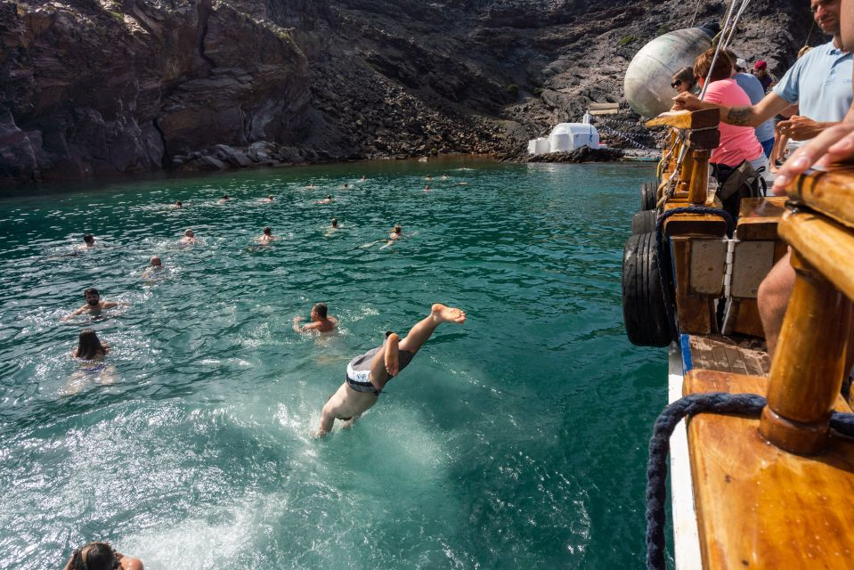
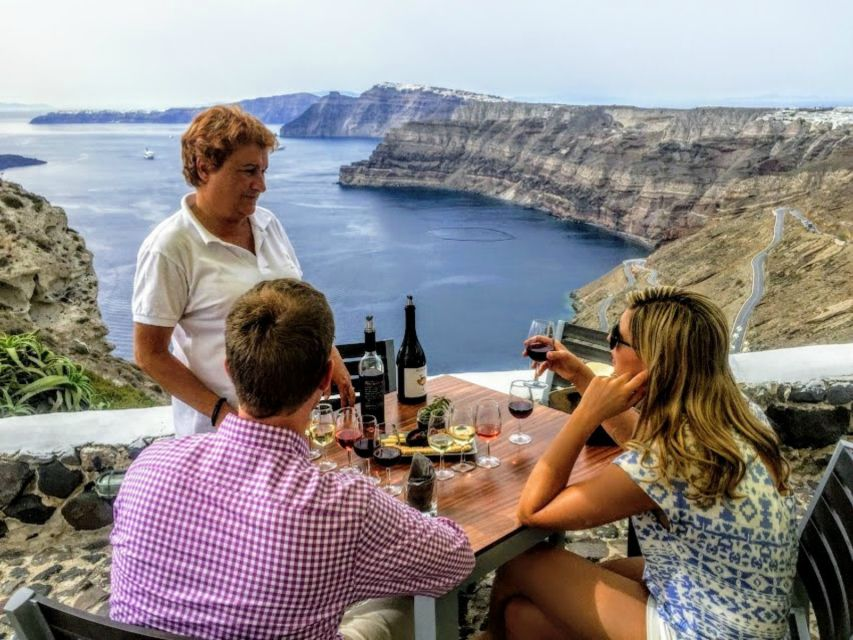
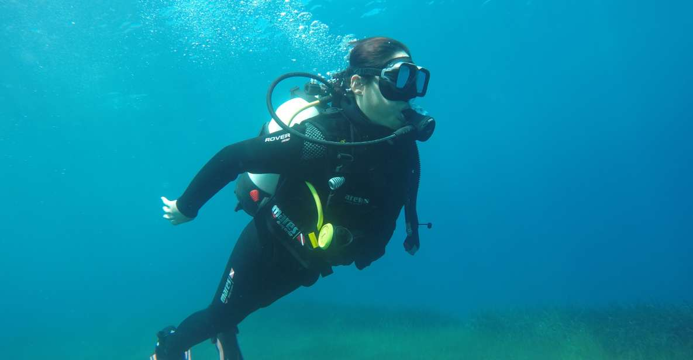
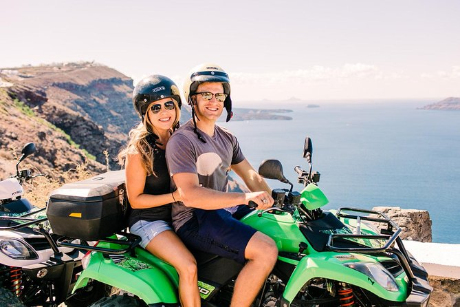

| Activity | Description | |
|---|---|---|
|  | Volcanic Islands Cruise with Hot Springs Visit | Cruise to the volcanic islands of Santorini's caldera region. Swim in hot springs, admire views from an active volcano and explore the typical villages of Thirassia and Oia. |
|  | Wine Tasting Tour | Taste the wines produced on the island of Santorini on a tasting tour with a local wine expert. Visit the island's best wineries to explore the vineyards and hear about the different grape varieties. |
|  | Scuba Diving Experience in the Volcanic Caldera | Dive into the blue water off the coast of Santorini and scuba dive together with a local instructor. Explore the volcanic reef and caldera and swim past marine life on this fun excursion. |
|  | ATV-Quad Tour | Start at the black sand beach of Perissa and follow back roads to amazing sites like the Venetian Castle, a wine cellar, the Windmills of Emporio, and more. See the island’s highlights while enjoying an active adventure |